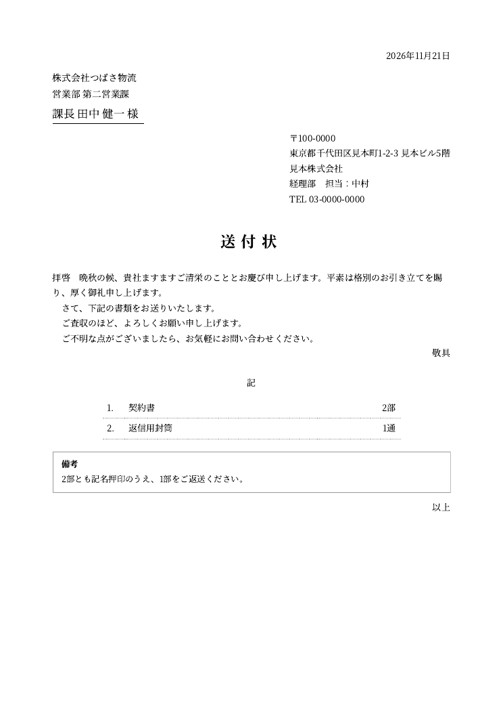

送付状の一括作成
Excel や CSV の取引先一覧から、宛先・日付・同封書類を入れた A4 の送付状（添え状）を、1社1枚でまとめて印刷するツールです。月末に請求書を何社にも郵送するとき、Word の送付状の宛名と書類名を1枚ずつ書き換える手間がなくなります。ソフトのインストールは不要で、いつものブラウザで動きます。
500円（税込・買い切り）
お試し版はすべての機能を使えて、印刷は先頭3通までです。決済が終わると、そのまま製品版の画面に移動します。ブックマークしておけば何度でも使えます。

見本のデータで作った送付状の例。会社名・氏名・住所は説明のための架空のものです。
こんなときに
- 月末に、請求書・納品書を何社にも郵送していて、送付状を Word で1枚ずつ宛名だけ書き換えている
- 取引先によって同封する書類（請求書だけ、見積書と工程表、契約書と返信用封筒…）が違い、書き間違いが心配
- 会社あては「御中」、担当者あては「様」の付け分けを、毎回確かめている
- 封筒の宛名と同じ取引先一覧から、送付状もまとめて作りたい
できること
- 読み込み：Excel（.xlsx）・CSV（UTF-8／Shift_JIS を自動判定）・表の貼り付け。「会社名」「部署」「役職」「担当者」「同封書類」「備考」などの見出しから列を自動で選びます（選び直し可）
- 宛先と敬称：担当者の名前がある宛先は「様」（殿・先生も選べます）、名前がない宛先は会社名か部署に「御中」を付けます。役職は名前の前に入れます。郵便番号・住所を宛先の上に入れることもできます
- 同封書類：全員に共通の書類（「請求書 1部」のように1行に1つ）と、宛先ごとの「同封書類」の列（「見積書 2部、工程表 1部」のように区切って書く）のどちらも使えます。「記」の下に番号つきで並べます
- 文面：表題（送付状・書類送付のご案内・自由入力）、日付（西暦・和暦）、「拝啓〜敬具」の丁寧な形と、頭語なしの短い形。時候の挨拶は日付の月から選べます（「時下」も選べます）。本文は自由に書き換えられ、{会社名} {氏名} や一覧の列の見出しで宛先ごとの値を差し込めます
- そのほか：差出人（住所・会社名・担当者・電話など、1行ずつ）と押印の丸枠、宛先ごとの備考、文書番号、明朝・ゴシック、文字の大きさ。「送る／送らない」の列に「×」「メール」などと書いた行は印刷しません
- 印刷の前の確認：一覧で宛先・同封書類を確かめられ、宛先や差し込みが空欄の行には印が付きます。1枚に収まらないときは文字を少しだけ小さくし、それでも収まらない送付状をお知らせします
できないこと（購入前にご確認ください）
- メールやFAXの送信はしません。印刷するか、ブラウザの印刷画面で PDF に保存するところまでです（PDF は全員分で1つのファイルになります）
- 横書き・A4 縦の1種類の体裁です。縦書きや、会社のロゴ・角印の画像は入れられません
- 送付状の書き方（敬語・時候の挨拶）は一般的な例を用意していますが、社内の決まりがある場合は本文を書き換えてお使いください
- Excel の読み込みは1枚目のシートだけです
- 1通だけ作るなら、無料で配られている送付状のテンプレートで十分です。このツールは、何社分もまとめて作るときに向いています
- スマートフォンでは操作しにくいため、パソコンでお使いください
よくある質問
| Word の差し込み印刷と何が違いますか？ | Word でも「差し込み文書」から取引先一覧を差し込めますが、会社あてと個人あてで「御中」「様」を付け分けたり、宛先ごとに数の違う同封書類を「記」の下に並べたりするには、差し込みフィールドの条件を自分で組む必要があります。このツールは列を選ぶだけでそれを行い、1枚に収まらない送付状も知らせます。 |
|---|---|
| 取引先の一覧はどこかに送られますか？ | 送られません。読み込み・印刷は、すべてお使いのブラウザの中で行います。差出人や本文などの設定だけをブラウザに保存し、取引先の一覧は保存しません。 |
| 封筒の宛名も印刷できますか？ | 封筒の宛名は、同じ取引先一覧を使って 封筒の宛名印刷（別商品）で印刷できます。 |
| 印刷すると小さくなります | 印刷画面で倍率を「100%（実際のサイズ）」にし、余白を「なし」にしてください。 |
| 何社まで使えますか？ | 製品版は件数の制限はありません。 |
安心してお使いいただくために
- 取引先の一覧はお使いのブラウザの中だけで処理し、サーバーには送信しません
- 動作環境：最新版の Chrome・Safari・Edge・Firefox（パソコン）
- 説明どおりに動かない場合は、ご購入から7日以内にご連絡いただければ返金します
封筒は 封筒の宛名印刷、ラベル用紙は 宛名ラベルの面付け印刷 もあります。取引先一覧の重複は 名簿の重複チェック で先に整えられます。